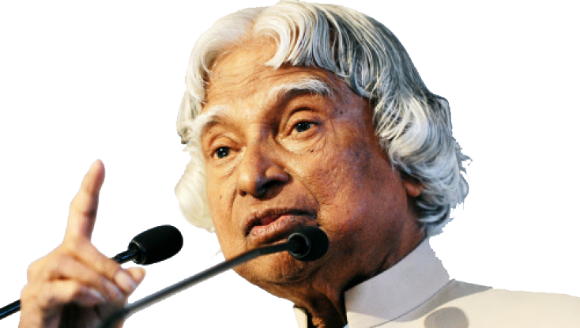

A.P.J. Abdul Kalam

Great Indian Scientist and Politician Who Played a Leading Role in the development of India's Missile
and
Nuclear Weapons Programs
About the Legend
- Full Name of A.P.J. Abdul Kalam was Avul Pakir Jainulabdeen Abdul Kalam, It was Born on 15 October
1931 in Rameswaram, Tamil Nadu, India.
- He Served as the 11th President of India from 2002 to 2007.
- Kalam Earned a degree in Aeronautical Engineering from the Madras Institute of Technology and then
He Joined the Defense Research and Development Organisation ( DRDO ).
- In 1969, He Moved to the Indian Space Research Organisation, Where He was Project director of the
SLV-III, The First Satellite Launch Vehicle that was Both Designed and Produced in India.
- Rejoining DRDO in 1982, Kalam Planned the Program that Produced a Number of Successful Missiles,
Which Helped Earn Him the Nickname "Missile Man".
- Among those Successes was Agni, India's First Intermediate-Range Ballistic Missile, Which
Incorporated Aspects of SLV-III and was Launched in 1989.
- He also Played a Pivotal Organisational, Technical and Political Role in India's Pokhran-II Nuclear
Tests in 1998, The First Since the Original Nuclear Test by India in 1974.
- From 1992 to 1997, Kalam was Scientific Adviser of the Defense Minister and later He Served as
Principal Scientific Adviser ( 1999 - 2001 ) of the Government with the Rank of Cabinet Minister.
- His Prominent Role in the Country's 1998 Nuclear Weapons Tests Solidified India as a Nuclear Power
and Established Kalam as a National Hero, Although the Tests Caused Great Concern in the
International Community.
- In 1998, Kalam Put Forward a Country-Wide Plan Called Technology Vision 2020, Which He described as
a Roadmap for Transforming India from a Less-Developed to a Developed Society in 20 Years. The Plan
Called for, Among other Measures Increasing Agricultural Productivity, Emphasizing Technology as a
Vehicle for Economic Growth and Widening Access to Health Care and Education
- In 1997, Kalam Recieved India's Largest Civilian Honour, the Bharat Ratna, For his Contribution to
the Scientific Research and Modernisation of Defense Technology in India.
- In 2013, He was the Recipient of the Von Brann Award from the National Space Society "to Recognize
Excellence in the Management and Leadership of a Space-Related Project"
- While delivering a Lecture at the Indian Institute of Management Shillong. Kalam Collapsed and died
from an Apparent Cardiac Arrest on 27 July 2015, Aged 83.
- Wheeler Island, a National Missile Test Side in Odisha was Renamed Kalam Island in
September 2015.
- A Prominent Road in New-Delhi was Renamed from Aurangzeb Road to Dr APJ Abdul Kalam
Road in August 2015.
- In February 2018, Scientists from the Botanical Survey of India Named a Newly Found Plant Species as
Drypetes Kalamii in his Honour.
For More Information, Check out A.P.J. Abdul Kalam on Wikipedia .